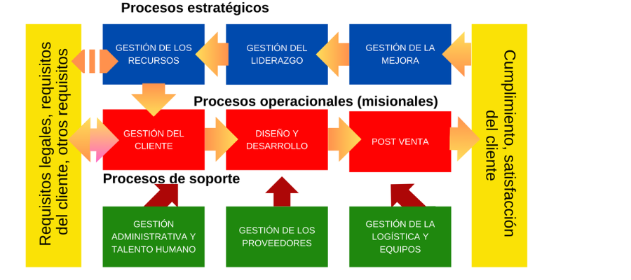

Introducción
El presente Mapa de Procesos representa gráficamente la estructura, interrelaciones y secuencia de los procesos que conforman el Sistema de Gestión de la Calidad (SGC) de la organización. Este mapa permite visualizar de manera clara y concisa cómo los procesos estratégicos, operativos y de soporte interactúan para cumplir con los requisitos de la norma ISO 9001:2015, así como para satisfacer las necesidades y expectativas de las partes interesadas.
Mapa de Procesos del Sistema de Gestión de la Calidad

Figura 1: Representación gráfica del Mapa de Procesos del Sistema de Gestión de la Calidad mostrando los procesos estratégicos, operativos y de soporte, con sus entradas (requisitos legales, requisitos del cliente, otros requisitos) y salidas (cumplimiento, satisfacción).
El mapa ilustra la interconexión entre los procesos estratégicos, operativos y de soporte, mostrando cómo cada uno contribuye a la consecución de los objetivos del SGC. Los procesos reciben entradas (requisitos legales, requisitos del cliente, otros requisitos) y generan salidas (cumplimiento, satisfacción del cliente).
Leyenda y Tipos de Procesos
Procesos Estratégicos: Orientan y dirigen la organización hacia el cumplimiento de sus objetivos
Procesos Operativos: Generan valor para el cliente a través de productos y servicios
Procesos de Soporte: Apoyan la operación efectiva de los procesos estratégicos y operativos
Descripción de los Procesos
PROCESOS ESTRATÉGICOS
- Gestión de los Recursos
- Gestión del Cliente
- Gestión del Liderazgo
- Gestión de la Mejora
Estos procesos definen la dirección estratégica de la organización, establecen políticas, objetivos y aseguran la disponibilidad de recursos para cumplir con los requisitos del cliente y las partes interesadas.
PROCESOS OPERATIVOS
- Diseño y Desarrollo
- Post Venta
- Gestión de los Proveedores
- Gestión de la Logística y Equipos
Procesos que transforman insumos en productos/servicios que generan valor para el cliente. Incluyen las actividades principales de la cadena de valor de la organización.
PROCESOS DE SOPORTE
- Administrativa y Talento Humano
Procesos que proporcionan la infraestructura, recursos humanos y capacidades administrativas necesarias para el funcionamiento efectivo de los procesos estratégicos y operativos.
Entradas del Sistema
El Sistema de Gestión de la Calidad procesa las siguientes entradas:
- Requisitos legales y regulatorios aplicables
- Requisitos y expectativas del cliente
- Otros requisitos de partes interesadas
- Recursos disponibles (humanos, financieros, materiales)
- Información del mercado y tendencias del sector
Salidas del Sistema
Como resultado de la implementación efectiva del Sistema de Gestión de la Calidad, se obtienen las siguientes salidas:
- Cumplimiento de requisitos legales y regulatorios
- Satisfacción del cliente
- Productos y servicios que cumplen especificaciones
- Mejora continua del desempeño organizacional
Interrelación entre Procesos
Los procesos del SGC están interconectados de manera que:
- Los procesos estratégicos (Gestión del Liderazgo, Gestión de Recursos) establecen la dirección y proporcionan recursos para los procesos operativos
- Los procesos operativos (Diseño y Desarrollo, Post Venta) generan valor para el cliente y retroalimentan información para la mejora
- El proceso de soporte (Administrativa y Talento Humano) proporciona la infraestructura y capacidades necesarias para todos los procesos
- La Gestión del Cliente y Gestión de la Mejora aseguran la alineación con las necesidades del mercado y la mejora continua
- La Gestión de Proveedores y Logística aseguran la cadena de suministro efectiva para los procesos operativos
Historial de Versiones
| Versión | Fecha | Asiento | Aprueba |
|---|---|---|---|
| 000 | 01.12.2024 | Original | CEO |